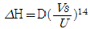
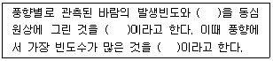
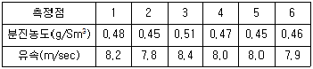
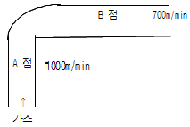
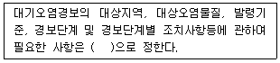

대기환경산업기사 (2002-03-10 기출문제)
1과목: 대기오염개론
1. 주요 대기오염물질인 '염화수소'를 배출하는 업종과 가장 거리가 먼 것은?
- 염산제조
- 소오다공업
- 플라스틱 공장
- 냉동공장
(정답률: 알수없음)

2. 런던형 스모그에 관한 설명으로 알맞지 않은 것은?
- 주 오염성분은 부유분진, SO2 이다.
- 역전의 종류는 침강성 역전(하강형)이다.
- 시정거리는 100m 이하이며 주된 화학반응은 환원반응이다.
- 호흡기 자극, 폐염등에 의한 심각한 사망률을 나타낸다.
(정답률: 82%)
3. 다음 대기오염 물질 중에 공기보다 가벼워 가장 잘 상승 할 수 있는 물질은?
- SO2
- NO2
- NH3
- H2S
(정답률: 50%)
4. 지구에서 복사되는 에너지를 흡수하여 지구의 열 손실을 막아주는 대기질 중 가장 큰 부분을 차지하는 것은?
- 일산화탄소
- 메탄
- 이산화탄소
- 오존
(정답률: 70%)
5. 0.2%(V/V)의 SO2를 포함하고 발생량이 500m3/min인 매연의 1년간 발생된 총량의 30%가 같은 방향으로 흘러가 그 지역의 식물에 피해를 주었다. 10년후에 그 지역에 살아남은 수목이 전체의 1/10이였을 때 10년간 그 지역에 피해를 준 SO2 양은? (단, 표준상태를 기준으로 한다.)
- 약 4,000톤
- 약 4,500톤
- 약 5,000톤
- 약 5,500톤
(정답률: 20%)
6. 대기가 불안정하여 난류가 심할 때 발생하며 굴뚝부근의 지표면에서 국지적이고 일시적인 고농도현상이 발생하기도 하는 굴뚝에서 부터 배출되는 연기형태는?
- 원추형(coning)
- 훈증형(fumigation)
- 부채형(fanning)
- 환상형(looping)
(정답률: 59%)
7. 대음 중 1차 오염 물질에 속하지 않는 것은?
- SO2, NO2
- NH3, CO
- HC, Pb
- NOCl, O3
(정답률: 90%)
8. 건물 가까이 위치한 굴뚝에서 연기가 건물의 영향을 받지 않고 분산하려면 굴뚝높이는 건물높이의 얼마로 하여야 하는가?
- 1.0배이상
- 1.5배이상
- 2.0배이상
- 2.5배이상
(정답률: 알수없음)
9. 풍속이 2m/s인 날, 실제 굴뚝높이가 100m이고 굴뚝의 안지름이 1.5m인 굴뚝에서 유황산화물을 포함하는 연기가 12m/s의 속도로 배출되고 있다.배출가스 중 유황산화물의 농도가 3,000ppm이며, 수직 및 수평확산계수가 모두 0.1 이라면 매연과 대기와의 온도차가 50℃이하로서

의 식으로 계산된 굴뚝의 유효 높이는?- 약 108m
- 약 112m
- 약 119m
- 약 124m
(정답률: 42%)
10. 휘발유를 사용하는 차량의 배출오염물질중 탄화수소를 가장 많이 발생하는 경우는?
- 공전(idling)
- 가속
- 감속
- 정속
(정답률: 80%)
11. 다음 중 광화학 옥스단트를 만드는 주된 물질로 조합된 것은?
- 탄화수소 - 질소산화물
- 일산화탄소 - 아황산가스
- 아황산가스 - 질소산화물
- 탄화수소 - 일산화탄소
(정답률: 50%)
12. 자동차 디젤기관의 특성이라 볼수 없는 것은?
- 일반적으로 공기가 충분히 공급되기 어려워 불완전 연소가 발생한다.
- 휘발유 엔진에 비하여 HC, CO의 배출농도는 매우 낮은 편이다.
- NOx와 매연이 많이 배출된다.
- 소음, 진동이 크며 연기, 악취로 대중의 인식이 나쁘다.
(정답률: 46%)
13. 대기오염에 사용되는 ppm은 부피당 부피(V/V)와 무게당 무게(W/W)로 나눌 수 있다. 이산화황가스 100(V/V)ppm은 무게당 무게로 몇 ppm인가?
- 121ppm
- 151ppm
- 221ppm
- 251ppm
(정답률: 20%)
14. 대기는 연직방향으로 몇 개의 기권으로 나눌수 있다. 나누는 기준으로 가장 알맞은 것은?
- 대기성분 분포
- 온도의 고도분포 특징
- 역전층의 구분
- 공기밀도의 차이
(정답률: 알수없음)
15. ( )안에 들어갈 말로 알맞게 묶어진 것은?

- 풍속 - 바람장미 - 주풍
- 풍향 - 바람분포도 - 지균풍
- 난류도 - 연기형태 - 경도풍
- 기온역전도 - 환경감율 - 확산풍
(정답률: 50%)
16. 다음 중 식물의 잎에 백화현상이나 맥간반점을 일으키는 주된 오염물질은?
- 분진
- SO2
- NO2
- CO
(정답률: 64%)
17. 지상 40m에서 풍속이 8m/s 일 때, 지상 10m 높이에서의 풍속은 얼마인가? (단 , Deacon식 적용, 풍속지수 p는 0.25)
- 3.5m/s
- 5.7m/s
- 6.4m/s
- 7.2m/s
(정답률: 알수없음)
18. SO2 의 1일 평균농도가 25℃, 1.0atm에서 525 ㎍/m3이라면 이 때의 SO2 농도를 ppm 으로 알맞게 나타낸 것은?
- 0.159
- 0.201
- 0.256
- 0.314
(정답률: 16%)
19. 다음 중 O3 에 의한 피해가 가장 심한 것은?
- 고무의 노하
- 니켈-동선의 부식
- 금속의 부식
- 유리 제조품의 부식
(정답률: 73%)
20. 불안정한 대기상태에서 굴뚝의 배출가스온도는 320℃ 이고, 배출가스속도는 7m/s 이며 대기온도는 25℃이다. 굴뚝의 지름이 600㎝, 통풍력이 65mmH2O, 풍속이 5m/s 일 때 굴뚝의 높이는? (단, 공기와 배출가스의 비중은 γa, γg = 1.3㎏/Nm3)
- 약 90m
- 약 100m
- 약 110m
- 약 120m
(정답률: 25%)
2과목: 대기오염 공정시험 기준(방법)
21. 직접관능법 악취측정에 관한 내용 중 틀린 것은?
- 악취조사 판정자는 5인 이상으로 구성한다.
- 악취도가 3도 이상이면 부적합으로 판정한다.
- 악취도가 3도이면 보통정도의 취기를 감지할수 있다.
- 측정지점은 악취의 취기강도가 가장 높은 악취발생 현장의 부지 경계선상이나 피해지점을 선정한다.
(정답률: 64%)
22. 어느 굴뚝에서 배출되는 가스중의 수분을 측정한 결과 건조가스 1Nm3당 100g 이었다면 건조 배출가스에 대한수분의 용량비는?
- 3.5%
- 8.5%
- 12.4%
- 18.6%
(정답률: 22%)
23. 염소가스 분석법의 흡수액은?
- 붕산용액
- 수산화나트륨용액
- 디에틸아민구리액
- 0-톨리딘 염산용액
(정답률: 24%)
24. 사각형 굴뚝단면적이 28m2 라면 가장 알맞은 먼지 측정 점수는?
- 16
- 18
- 20
- 24
(정답률: 알수없음)
25. 흡광광도법의 눈금보정에 사용되는 시약은?
- 수산화칼륨용액
- 중크롬산 칼륨용액
- 크롬산 나트륨용액
- 과망간산 칼륨용액
(정답률: 알수없음)
26. 비색법에 의해 어떤 물질을 정량할 때, 5㎜의 셀(cell)을사용한 경우, 시료의 흡광도가 0.1 이라면 같은 시료를 10㎜ 셀을 사용하여 측정한 흡광도는?
- 0.01
- 0.⑤
- 0.1
- 0.2
(정답률: 19%)
27. 원자흡광광도법의 측정시 재현성을 저해하는 요인에 대한 설명 중 틀린 것은?
- 불꽃을 투과하는 광속위치의 변화
- 광원램프의 열화
- 불꽃온도의 불균일
- 가연성가스 및 조연성가스의 과열
(정답률: 40%)
28. 환경대기중의 아황산가스 측정방법중 주시험 방법은?
- 용액전도율법(자동)
- 불꽃광도법(자동)
- 파라로자닐린법(수동)
- 산정량수동법
(정답률: 알수없음)
29. 배출가스중의 질소산화물을 페놀디술폰산법으로 측정할경우 시료가스의 흡수액은?
- 암모니아수
- 페놀디술폰산
- 황산+과산화수소수
- 붕산
(정답률: 64%)
30. 단면의 모양이 4각형인 어느 연도를 6개의 등면적으로 구분하여 각 측정점에서 유속과 먼지의 농도를 측정하여 다음과 같은 결과를 얻었다. 평균 먼지농도는?

- 0.45 g/Sm3
- 0.47 g/Sm3
- 0.49 g/Sm3
- 0.50 g/Sm3
(정답률: 알수없음)
31. 흡광광도법의 설명으로 알맞지 않은 것은?
- 파장 200~1200nm에서 액체의 흡광도를 측정함으로써 대기오염물질 분석에 적용한다
- 광원에서 나오는 빛을 단색화장치 또는 파장선택 장치에 의하여 좁은 파장범위의 빛만을 선택하여 기층을 통과 시킨 다음 흡광도 측정한다
- 흡광도는 투과도 역수의 상용대수이다.
- 램비어트 비어법칙이 활용된다.
(정답률: 알수없음)
32. 비분산적외선분석법에 관한 내용 중 알맞지 않은 것은?
- 대기 및 굴뚝 배출가스 중의 오염물질을 연속적으로 측정하는 비분산 정필터형 적외선 가스분석계에 대하여 적용한다.
- 비분산(non dispersive)이란 프리즘 회절격자와 같은 소자를 이용하여 빛의 분산을 억제하는 것을 말한다.
- 선택성 검출기를 이용 시료중 특성성분에 의한 적외선의 흡수량 변화를 측정하여 시료중 들어있는 특정성분농도를 측정한다.
- 적외선가스분석계는 적외선광원, 회전섹터, 광학필터, 시료셀, 비교셀, 적외선검출기, 증폭기, 지시계로 구성된다.
(정답률: 37%)
33. 다음은 굴뚝 배출가스 시료채취 장치중의 가스 채취부에관한 설명이다. 틀리는 것은?
- 수은마노미터는 대기와 압력차가 15㎜Hg 이하의 것을 사용한다.
- 가스 건조탑은 유리로 만든 것을 쓰며 건조제로는 입자 상태의 실리카겔, 염화칼슘등을 쓴다.
- 펌프는 배기능력 0.5~5L/min의 밀폐형펌프를 사용한 다.
- 가스미터는 1회전 1L되는 습식 또는 건식가스 미터로 온도계와 압력계가 붙어 있는 것을 쓴다.
(정답률: 59%)
34. 10 w/v% 용액에 대한 설명으로 알맞는 것은?
- 용질 10mL를 물에 녹여 100mL로 한것이다.
- 용질 10g을 물 90mL에 녹인 것이다.
- 용질 10g을 물에 녹여 100mL로 한것이다.
- 용질 10g을 물 또는 알콜에 녹여 110mL로 한것이다.
(정답률: 알수없음)
35. 카드뮴화합물 분석을 위한 전처리 법으로 저온화화법을이용할 때 회화온도기준으로 적절한 것은?
- 100℃이하
- 200℃이하
- 300℃이하
- 500℃이하
(정답률: 알수없음)
36. 굴뚝에서 배출되는 암모니아 흡수에 관한 내용으로 알맞지않은 것은? (단, 산성가스가 없는 경우)
- 흡수액으로 붕산용액(0.5%)이 사용된다.
- 시료의 흡인속도는 1~2L/min 정도로 한다.
- 흡수병에 시료를 도입하기전에 바이패스를 써서 배관속을 시료로 충분히 치환해 준다.
- 흡수병은 채취위치로 부터 일정한 간격을 유지한다.
(정답률: 30%)
37. 배출 가스중의 황화수소를 분석할 때 시료중에 황화수소가 5~1000ppm 함유되어 있는 경우에 적절한 분석방법은?
- 요오드 적정법(용량법)
- 메틸렌 블루우법(흡광광도법)
- 아르세나조 Ⅲ법(침전적정법)
- 중화 적정법
(정답률: 34%)
38. 시험의 기계 및 용어설명에 관한 내용 중 틀린 것은?
- 정확히단다 : 분석용저울로 0.1㎎까지 다는것을 뜻한다.
- 용액의 액성표시 : 따로 규정이 없는 한 유리전극법에 의한 pH 미터로 측정한 것을 뜻한다.
- 바탕시험을 하여 보정한다 : 시료에 대한 처리 및 측정 할 때 시료를 사용하지 않고 같은 방법으로 조작한 측정 치를 빼는 것을 뜻한다.
- 정량적으로 씻는다 : 어떤 조작에서 다음 조작으로 넘어 갈때 사용한 비이커, 플라스크 등에 정량 대상 물질이 남지 않도록 세척, 제거함을 말한다.
(정답률: 31%)
39. 다음 화합물중 디에틸디티오 카르바민산은의 클로로포름용액에 흡수시켜 생성되는 적자색 용액의 흡광도를 측정하여 정량하는 것은?
- 불소화합물
- 비소화합물
- 카드뮴화합물
- 질소화합물
(정답률: 54%)
40. 10 mmH2O 는 몇mmHg 인가?
- 0.74 mmHg
- 7.35 mmHg
- 0.45 mmHg
- 4.45 mmHg
(정답률: 70%)
3과목: 대기오염방지기술
41. 기체 연료 연소로의 배출가스를 오르자트(orsat)분석기로 분석한 결과 CO2 13%, O2 5%를얻었다. 이때 공기비는? (단, 완전연소되는 경우로 가정함)
- 1.1
- 1.2
- 1.3
- 1.5
(정답률: 50%)
42. 옥탄(C8H18)이 완전연소 될 때 부피기준의 AFR(air fuel ratio)은?
- 42.3
- 59.5
- 63.3
- 71.2
(정답률: 28%)
43. 다음 연료 중 착화온도가 가장 높은 것은?
- 메탄
- 수소
- 목탄
- 역청탄
(정답률: 47%)
44. 다음은 전기 집진 장치의 집진극에 대한 설명이다. 잘못된 것은?
- 집진극의 모양은 여러가지가 있으나 평판형과 관(管)형 이 가장 많이 사용된다.
- 처리가스량이 많고 고집진효율을 위해서는 관형 집진극 이 사용된다.
- 보통 방전극의 재료와 비슷한 탄소함량이 많은 스테인레 스 강 및 합금을 사용한다.
- 집진극면이 항상 깨끗하여야 강한 전계(電界)를 얻을수 있다.
(정답률: 67%)
45. 다음 중 유해가스를 처리 하기 위한 흡수액의 구비 요건중 틀린 것은?
- 용해도가 높아야 한다.
- 휘발성이 커야 한다.
- 점성이 비교적 작아야 한다.
- 화학적으로 안정 되어야 한다.
(정답률: 70%)
46. 후드의 성능이 저하되는 원인으로 옳지 않은 것은?
- 송풍기의 풍량이 부족하다.
- 덕트내의 먼지퇴적으로 인하여 압력손실이 증가한다.
- 발생원으로부터 개구면까지 거리가 가까워진다.
- 후드에서 밖으로 바람이 새고 있다.
(정답률: 알수없음)
47. bag filter를 통과한 가스의 분진농도가 0.004g/m3 이며먼지의 통과율이 2.6%이라면 집진기를 통과하기전 가스중의 분진농도는?
- 100 mg/m3
- 154 mg/m3
- 186 mg/m3
- 210 mg/m3
(정답률: 46%)
48. 표준상태에서 메탄(CH4) 4m3를 완전연소시키는데 요구되는 산소의 무게는?
- 5.60 kg
- 11.43 kg
- 29.60 kg
- 38.55 kg
(정답률: 25%)
49. 소각로 중 연료의 상부 주입식(over feed type)에서 용적구성비(%)중 CO에 해당하는 곡선은 어느 것인가?
- A
- B
- C
- D
(정답률: 알수없음)
50. 다음 중 후드의 종류에 해당되지 않는 사항은?
- 확산형
- 캐노피형
- 슬로트형
- 포위형
(정답률: 50%)
51. 어느 보일러에 사용하고 있는 중유의 고발열량이 10,500Kcal/kg이라 하면 이 연료의 저발열량은? (단, 연료중의 수소는 12%, 수분 0.3% 이다.)
- 9,850 Kcal/kg
- 9,926 Kcal/kg
- 9,960 Kcal/kg
- 9,980 Kcal/kg
(정답률: 알수없음)
52. 이젝트를 사용하여 물을 고압분무함으로서 먼지, 가스를제거하는 방식으로 송풍기를 사용하지 않는 것이 특징이며 대용량의 경우에는 잘쓰지 않는 세정 집진기는?
- 사이크론스크러버
- 제트스크러버
- 벤츄리스크러버
- 임펄스스크러버
(정답률: 알수없음)
53. 다음은 유해가스의 처리방법을 나타낸 것이다. 이중 적당치 않는 것은?
- CO – 촉매산화처리
- Hg - 고온분해법
- C6H6 – 촉매연소법
- NH3 - 물세정처리
(정답률: 알수없음)
54. Rosin-Rammler 곡선을 이용하는 것은?
- 처리가스의 산노점 분석
- 입자지름 분포에 따른 먼지의 제거방법 선택
- 전기집진시 최적조건 선택
- 먼지의 비중에 따른 후드 압력손실 계산
(정답률: 25%)
55. 염소농도가 2000ppm인 배출가스 5000Sm3/hr를 수산화칼슘 현탁액으로 처리하고자 할 때, 이론적으로 소요되는 수산화칼슘의 양은 약 얼마인가? (단, 수산화칼슘의 분자량은 74 이다.)
- 19 kg
- 25 kg
- 33 kg
- 45 kg
(정답률: 알수없음)
56. 미분탄연소의 장점을 열거하였다. 옳지 않은 것은?
- 연료의 표면적이 크고 공기와의 접촉이 좋기 때문에 과잉 공기가 적어도 완전연소가 가능하다.
- 연소의 조절이 쉽고 점화, 소화시의 손실이 적다.
- 부하의 변동에 용이하게 적용된다.
- 완전연소로 인하여 배출 먼지량이 적다.
(정답률: 59%)
57. 다음 배연탈황법 중에서 (촉매사용) 배기중의 황산화물을 농황산(80% 정도)으로 직접 회수할 수 있는 방법은?
- 건식흡수법
- 습식흡수법
- 흡착법
- 산화법
(정답률: 40%)
58. 그림과 같은 가스 유송관에서 A점에서의 가스의 유속이1000m/min이였고 B점에서 가스의 유속이 700m/min이였다. 이 두지점의 압력손실의 차는 몇 mmH2O인가?

- 2.52mmH2O
- 4.86mmH2O
- 6.32mmH2O
- 8.64mmH2O
(정답률: 10%)
59. 다음의 재료로 만든 여과포중에서 고온에 가장 잘 견디는 것은?
- glass fiber
- Polyester계 섬유
- 무명
- Polyamide계 섬유
(정답률: 55%)
60. 3%의 황을 함유한 석탄 1톤을 완전연소하면 표준상태에서 약 몇 m3의 아황산가스가 발생하겠는가? (단, 황의 전량이 아황산가스화 한다)
- 10
- 15
- 21
- 30
(정답률: 알수없음)
4과목: 대기환경 관계 법규
61. 초과부과금 산정기준중 오염물질 1킬로그램당 부과금액이 가장 적은 오염물질은?
- 먼지
- 황산화물
- 암모니아
- 염소
(정답률: 40%)
62. 대기환경기준에 관한 사항 중 틀린 것은?
- 1시간 평균치는 999천분위수의 값이 그 기준을 초과하여서는 안된다
- 미세먼지는 입자크기 1.0㎛이하인 먼지를 말한다.
- 먼지는 총먼지, 미세먼지로 나누어진다.
- 납의 년간 평균치는 0.5㎍/m3이하 이다.
(정답률: 알수없음)
63. 아황산가스의 1시간 평균치로서의 대기환경기준은?
- 0.⑤ppm이하
- 0.1ppm이하
- 0.15ppm이하
- 0.2ppm이하
(정답률: 알수없음)
64. 대기환경규제지역을 관할하는 시,도지사는 당해 지역이대기환경규제지역으로 지정,고시된 후 얼마기간이내에 당해 지역의 환경기준을 달성,유지하기 위한 계획을 수립 시행하여야 하는가?
- 6월
- 1년
- 2년
- 3년
(정답률: 46%)
65. ( ) 안에 알맞는 내용은?

- 국무총리령
- 환경부장관령
- 대통령령
- 시,도지사령
(정답률: 50%)
66. 기후, 생태계 변화 유발물질과 가장 거리가 먼것은?
- 염화불화탄소
- 메탄
- 일산화탄소
- 육불화황
(정답률: 46%)
67. 사업자가 배출시설 및 방지시설의 운전미숙으로 인한 개선 계획서 제출시 첨부되어야 할 내용이 아닌 것은?
- 오염물질 발생량
- 방지시설의 처리능력
- 배출허용기준 초과사유 및 대책
- 공사기간 및 공사비
(정답률: 알수없음)
68. 환경부장관이 총량규제를 실시하고자 하는 경우 반드시 고시하여야 하는 내용과 가장 거리가 먼 것은?
- 규제구역
- 규제오염물질
- 오염물질 저감계획
- 오염물질 규제기준농도
(정답률: 37%)
69. 고체 환산연료 사용량이 연간 2,000톤이상 10,000톤 미만인 사업장의 자가측정 횟수로 맞는 것은?
- 주1회 이상
- 월2회 이상
- 월1회 이상
- 매분기 1회 이상
(정답률: 54%)
70. 배출허용 기준초과 일일오염물질 배출량의 산정 방법으로맞는 것은?
- 먼지 : 일일유량×배출허용기준초과농도×10-6×17÷22.4
- 이황화탄소 : 일일유량×배출허용기준초과농도×10-6×76 ÷22.4
- 황산화물 : 일일유량×배출허용기준초과농도×10-6×34÷22.4
- 불소화합물 : 일일유량×배출허용기준초과농도×10-6×27 ÷22.4
(정답률: 53%)
71. 자동차 연료용 첨가제의 종류와 가장 거리가 먼 것은?
- 세척제
- 매연 억제제
- 유동 첨가제
- 청정 분산제
(정답률: 40%)
72. 일일오염물질배출량 및 일일유량의 산정방법에 관한 내용으로 틀린 것은?
- 일반오염물질의 배출허용기준초과 일일오염물질배출량은 소숫점이하 첫째자리까지 계산한다.
- 먼지의 배출농도의 단위는 세제곱미터당 밀리그램으로 한다.
- 일일유량 산정시 적용되는 측정유량은 일일당 세제곱미터로 한다.
- 일일유량 산정시 적용되는 일일조업시간은 측정하기전 최근 조업한 30일간의 배출시설의 조업시간 평균치로서 시간으로 표시한다.
(정답률: 42%)
73. 환경관리인의 교육기관으로 적절한 곳은?
- 시도보건환경연구원
- 환경공무원교육원
- 환경관리공단
- 환경보전협회
(정답률: 알수없음)
74. 대기오염 경보단계중 중대경보가 발령되는 오염물질의 농도기준으로 알맞는 것은?
- 기상조건 등을 검토하여 해당지역내 대기자동측정소의 오존농도가 0.5ppm 이상일 때
- 기상조건 등을 검토하여 해당지역내 대기자동측정소의 오존농도가 1.0ppm 이상일 때
- 기상조건 등을 검토하여 해당지역내 대기자동측정소의 오존농도가 1.5ppm 이상일 때
- 기상조건 등을 검토하여 해당지역내 대기자동측정소의 오존농도가 2.0ppm 이상일 때
(정답률: 알수없음)
75. 현장에서 배출허용기준 초과여부를 판정할 수있는 오염물질이 아닌 것은?
- 악취(직접관능법에 의하여 측정하는 경우에 한한다)
- 일산화탄소
- 먼지
- 질소산화물
(정답률: 31%)
76. 황함유기준을 초과하는 연료를 공급, 판매하거나 사용한자에 대한 벌칙으로 적절한 것은?
- 1년이하의 징역 또는 500만원이하의 벌금
- 200만원이하의 벌금
- 100만원이하의 과태료
- 50만원이하의 과태료
(정답률: 25%)
77. 기본 부과금의 징수유예기간 중 분할납부 횟수기준은?
- 12회이내
- 8회이내
- 6회이내
- 4회이내
(정답률: 25%)
78. 비산먼지 발생사업 신고 시점으로 맞는 것은?
- 사업시행일 3일전
- 사업시행일 7일전
- 사업시행후 3일이내
- 사업시행후 7일이내
(정답률: 20%)
79. 대기환경보전법상 '첨가제' 용어정의로 가장 적절한 것은?
- 탄소와 수소만으로 구성된 물질을 제외한 화학물질로서 자동차의 연료에 소량을 첨가함으로써 자동차의 성능을 향상시키거나 자동차 배출물질을 저감시키는 화학물질로서 환경부령으로 정하는 것을 말한다.
- 탄소와 수소등으로 구성된 화학물질로 자동차의 연료에 소량을 첨가함으로써 자동차의 성능을 향상시키거나 자동차 배출물질을 저감시키는 물질로 환경부령으로 정하는 것을 말한다.
- 탄소와 수소만으로 구성된 물질을 제외한 화학물질로서 자동차의 연료에 소량을 첨가함으로써 자동차의 성능을 향상시키거나 자동차 배출물질을 저감시키는 화학물질로서 대통령령으로 정하는 것을 말한다.
- 탄소와 수소등으로 구성된 화학물질로 자동차의 연료에 소량을 첨가함으로써 자동차의 성능을 향상시키거나 자동차 배출물질을 저감시키는 물질로서 대통령령으로 정하는 것을 말한다.
(정답률: 알수없음)
80. 다음 중 특정 대기 유해물질이 아닌 것은?
- 벤지딘
- 프로필렌 옥사이드
- 트리클로로 에틸렌
- 염소 및 염화수소
(정답률: 30%)